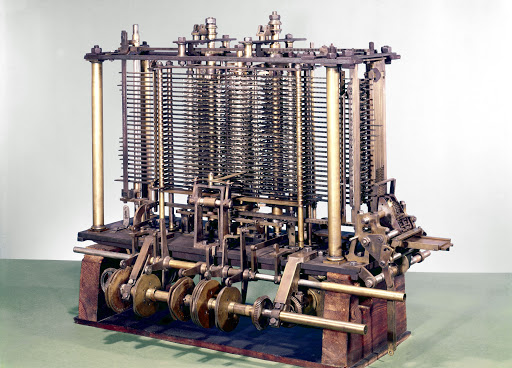

Unidad 1 Introduccion a la Arquitectura de Computadoras
Introduccion
A continuación en esta pagina se mostrará algunos temas vistos en lo que viene siendo la
materia de Arquitectura de Computadoras de la carrera de
Sistemas Computacionales del Instituto Tecnologico de Saltillo, el motivo de esta pagina
es meramente academico, por lo cual todo lo investigado
esta basado en otras paginas y fuentes de información (las cuales se deja el link de las mismas al final
de la pagina) siendo el proposito de esta pagina
un resumen un tanto general de ciertos temas de la materia como lo son conceptos generales, los
avances de las computadoras desde la creacion de
estas hasta la actualidad, la explicacion de ciertos componentes y clasificaciones
de dichos componentes, la historia de Intel y AMD, etc. (la unidad 1 al ser simplemente un video
opte por escribir el resumen del video hecho, además de poner el link del video al final del texto,
mientras que las demás unidad se puede apreciar las deapositivas que muestran
el resumen de la unidad)
Conceptos basicos de la Arquitectura de Computadora
Primero tenemos que entender un concepto muy basico empezando por saber ¿que es una computadora o
computador? esta pregunta se puede
responder diciendo que son todos los elementos que conforma a lo que conocemos como computadora
desde el hardware (todo componente fisico
sea se: monitor, teclado, targeta madre, mouse, etc); hasta el software (todas las aplicaciones
y sistemas operativos que necesita una computadora).
Ahora bien ¿que es la Arquitectura de Computadoras? viendo la desde el punto de vista de un progamador
es la relacion con el funcionamiento
de un sistema incluyendo aspectos como el tamaño de diferentes datos y los tipos de operaciones que se pueden realizar, por su parte
la
Estructura de Computadoras se refiere a la organización de los elementos que son visibles para el
programador, como las interfaces
hacia los dispositivos periféricos, la frecuencia de reloj y la tecnología utilizada en las memorias, entre otros
elementos.
Además en la Arquitectura de Computadoras existen Niveles de Arquitectura de Computadoras, dos principalmente:
El Nivel Superior
Donde los usuarios ejecutan programas a traves de la computadora y
El Nivel Inferior
El cual consiste principalmente por transitores y cables.
Avances de la Arquitectura de Computadoras
Pues bien, se puede decir que el inicio de la Arquitectura de Computadoras se dió en 1800 con la creación de, si bien no fue la primera computadora, la primera calculadora mecanica sumadora;
está calculadora también conocida como la pascalina o máquina de aritmética , fue la primera calculadora producida con una interfaz a base de ruedas giratorias y con la unica función de hacer sumas y restas,
creada por Blaise Pascual quién era un matemático y filósofo francés quién después 3 años de desarrollo logro hacer la calculadora con el fin de ayudar a su padre el cual era un recolector de impuestos.
Con el trascurso de los años Pascal produjo 50 máquinas idénticas con el fin de distribuirlas a diversas personas en Europa siendo considerada la primera máquina para satisfacer un fin comercial (sin contar
el ábaco creado por los griegos).
 Charles Babbege construyó una máquina que podia ser programable para hacer cualquier tipo de cálculo más allá de las tablas logarítmicas o funciones polinómicas, creando a sí la primera
máquina analítica
la cual tenia dispositivos de entrada basados en tarjetas perforadas de Jacquard, un procesador aritmético, una unidad de control que determinaba qué tarea debía realizar, un mecanismo de salida y una memoria donde
los números podían ser almacenados hasta ser procesados.
Todo esto, logró que consideren a la máquina analítica de Babbage como la primera computadora del mundo.
En los años de la segunda guerra mundial un ingeniero alemán llamado Arthur Scherbius, un experto en electromecánica, diseñó con ayuda de una compañia llamada Enigma Chiffiermaschinen
AG en Berlin lo que hoy conocemos
como la Máquina Analítica ENIGMA la cual era un dispositivo electromecánico, que consistía en una serie de teclas, al igual que una máquina de escribir, cuyo uso principal fue dando por el ejercito
Aleman como vía para compartir información confidencial pues la máquina contaba con un avanzado sistema de encriptación de datos, ademas de que podía leer datos de entrada, producir datos de salida, tenia un
control automático de las operaciones que la máquina realizaba y contaba con un espacio de almacenamiento de datos.
Sin embargo la Máquina ENIGMA no fue la unica diseñada en la Segunda Guerra Mundial, Tommy Flowers fue un ingeniero británico quien diseño la Máquina Colossus empleada para
leer las comunicaciones cifradas alemanas
durante la Segunda Guerra Mundial, permitiendo conocer detalles sobre movimientos de tropas, el estado de los suministros, municiones, el núemro de soldados muertos, entre otras cosas.
Basando se en la idea de universalidad de la máquina de Turing, estaba compues por más de 1.500 tubos de vacío, usaba tarjetas pergoradas para la entrada de datos y los resultados se almacenaban en relés temporalmente hasta que
se les daba salida a través de una máquina de escribir; siendototalmente automática, medía 2.25 metros de alto y 3 metros de largo por 1.20 de ancho.
 Por parte de Estados Unidos, también desarrollaron máquinas para utilizar durante la Segunda Guerra Mundial, una de ellas
fue la Máquina ENIAC (Electronic Numerial Integrator And Computer), esta fue un ordenador electrónico digital con fines generales a gran escala, siendo la máquina más grande del mundo (en esa época), desarrollada por
Presper Eckert y John Mauchly quienes diseñaron el Hardware compuesto por 17468 tubos de vacío y con innovaciones técnicas como que combinaba diversos componentes técnicos en un único sistema que era capaz de realizar 5000 sumas y 300
multiplicaciones por segundo desarrollado por un grupo de informáticas. La función principal de esta máquina era resolver problemas de balística del ejército de Estados Unidos lo que hizo que esta máquina brillara más en el ámbito científico
que en el militar.
Por parte de Estados Unidos, también desarrollaron máquinas para utilizar durante la Segunda Guerra Mundial, una de ellas
fue la Máquina ENIAC (Electronic Numerial Integrator And Computer), esta fue un ordenador electrónico digital con fines generales a gran escala, siendo la máquina más grande del mundo (en esa época), desarrollada por
Presper Eckert y John Mauchly quienes diseñaron el Hardware compuesto por 17468 tubos de vacío y con innovaciones técnicas como que combinaba diversos componentes técnicos en un único sistema que era capaz de realizar 5000 sumas y 300
multiplicaciones por segundo desarrollado por un grupo de informáticas. La función principal de esta máquina era resolver problemas de balística del ejército de Estados Unidos lo que hizo que esta máquina brillara más en el ámbito científico
que en el militar.
Además de la máquina ENIAC, Presper Eckert y John Mauchly habían creado previmente la Máquina EDVAC(Electronic Discrete Variable Automatic Computer),
la cual fue una de las primeras computadoras electrónicas que, a diferencia de ENIAC, no era decimal, sino binaria el cual tuvo el primer programa diseñado para ser almacenado.
El objetico de esta máquina era almacenar las intrucciones que trabajarían con los datos introduciods en una memoria aparte, además de eso esta computadora ejecutaba las intrucciones de operaciones básicas, sin embargo terminosiendo de soporte
para resolver y encontrar problemas de la máquina ENIAC.
Para el año de 1949 cientificos del Laboratorio de Matemáticas de la Universidad de Cambridge diseñaron
la Máquina EDSAC(Electronic Delay Storage Automatic Computer) la cual se volvió el primer sistema de programa almacenado electrónicamente del mundo. La máquina contaba con pantallas de tubo de rayos catódicos para mostrar las operaciones electrónicas
del hardware con propósitos de diagnóstico, así como tanque para las líneas de retraso de mercurio para el almacenamiento principal y una tasa de transferencia demedio megaciclo por segundo.
En la década de los años 50 del siglo XX la empresa Remington Rand diseño la
Máquina UNIVAC(Universal Automatic Computer) considerado como el primer computador comercial desarrollado en Estados Unidos. Este computador estaba orientado a grandes empresas ya que tenia un costo elevado por emplear
alrededor de 5.000 tuvos de vacío, lo que permitía un tamaño más reducido en comparación con las anteriores versiones. Esta máquina esta compuestapor una unidad de control conectada a una memoria, y esta memoria conectada a su vez con un
dispositivo de entrada, otro de salidad y una unidad aritmética-lógica, la cual se encargaba de llevar a cabo las operaciones que van siendo almacenadas en la memoria recibidas por el dispositivo de entrada. Tanto el dispositivo de entrada
como el de salidad estaba constituido por cintas magnéticas.
Unidad Aritmetica-Logica(ALU)
La Unidad Aritmetica es un circuito dígital que realiza como su nombre lo indica las operaciones aritméticas y lógicas entre los datos de un circuito; suma, resta, divide y multiplica, así como establece comparaciones
lógicas a través de los condicionales lógicos "si", "no" y , "o". Donde todos los microprocesadores incluyen al menos una ALU donde andemás cuenta con una serie de registros para
almacenar los datos, y bits de información sobre los resultados.
De forma simple el ALU es un operador, es decir, sólo realiza operaciones no tiene la posibilidar de tomar decisiones y requiere de un mecanismo de control que le permita saber el tipo de operación a realizar.
Estas operaciones son:
Suma aritmética
Resta aritmética
Operaciones lógicas
Desplazamiento o rotación
Transferencia
Y las partes de una Unidad Aritmetica-Logica son:
Sumador/restador
Un acumulador y un registroauxiliar
Operadores logicos
Un registro de salida
Señales de control
Registro de banderas
 los cuales son computadoras pensadas para aplicar un mismo algortmo numérico a una serie de datos matriciales, en especial en la simulación de sistemas físicos complejos (como el clima,
explociones atómicas, reacciones químicas, etc.) y las extensiones MMX las cuales son instrucciones vectoriales que les permiten procesar flijos multimedia más eficientemente.
los cuales son computadoras pensadas para aplicar un mismo algortmo numérico a una serie de datos matriciales, en especial en la simulación de sistemas físicos complejos (como el clima,
explociones atómicas, reacciones químicas, etc.) y las extensiones MMX las cuales son instrucciones vectoriales que les permiten procesar flijos multimedia más eficientemente.